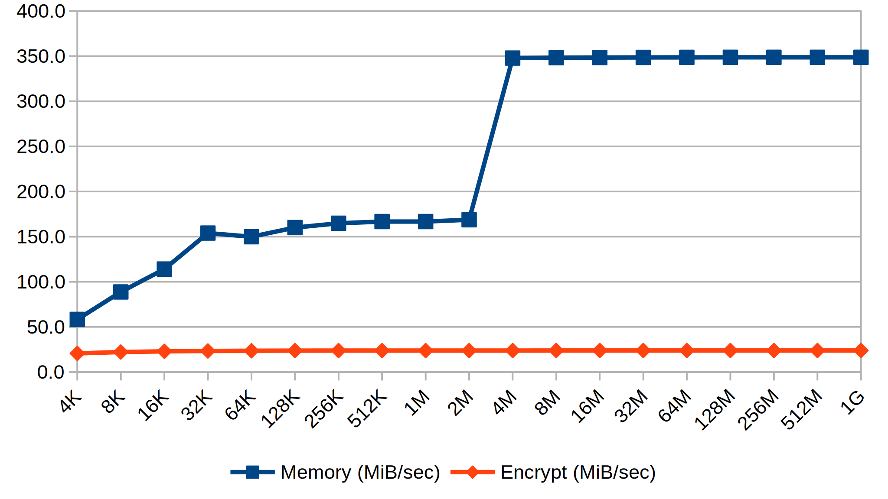

Optimization
After the first correct version of the AFU is flashed on the FPGA and tested, there usually comes a surprise: Without explicit optimization, very few algorithms perform better on the FPGA than on the CPU and after all the effort spent to port the algorithm the reward might be longer runtimes. This picture might however change significantly, after the design is properly optimized for the platform it is meant to run on.
Due to their generic structure FPGAs support much lower clock frequencies in comparison to CPUs. The value of an FPGA solution lies in the fact, that problems can be solved with parallel hardware that implements exactly the required functionality in few clock cycles, instead of using sequential general purpose instructions.
As it is generally not obvious, in what way an algorithm can be most efficiently parallelized, it is the task of the AFU developer to annotate the HLS code sufficiently to point out parallelization possibilities and remove obstacles such as false dependencies. The Vivado HLS IDE provides a valuable tool in its Analysis View, that visualizes the generated state machines. It can be used to explore the complexity and runtime of the hardware generated for different sections of HLS code and to judge the effect that a particular annotation has on the overall performance. Details on how to use the Analysis View and in-depth information on optimization best practices can be found in the official IBM course material.
Performance Analysis
Another important consideration is whether one particular parallelization (that duplicates the required hardware resources by the respective factor) really improves the focused overall performance indicator. In a throughput oriented scenario like the Blowfish AFU it seems sensible to use multiple instances of the encrypt function to encrypt multiple blocks in parallel. This measure is however only useful, if the data blocks can be transferred from host memory with a sufficient rate. Otherwise the throughput is limited by the host memory bus and a far more useful strategy would be to improve memory throughput by implementing intelligent buffering and prefetching strategies.
The best starting point for optimizations can often be found by experimenting with the real hardware. Thus our first step to optimize the Blowfish AFU was to perform two series of throughput measurements. The first only reads and writes back data blocks without encrypting them but keeping the same access patterns. In the second series the AFU does not interact with host memory at all but only performs the requested number of encryption runs on a dummy data block. Based on this information as visualized in the plot below, we determined that the encrypt function is the bottleneck and that an encrypt speedup of up to 16 times will benefit the overall performance.

Memory and encryption throughput for different input sizes (in bytes)
Improving Encrypt Performance
To speed up the encryption process, it is necessary to use parallel instances of the encrypt function on separate blocks of data. Because of the internal block structure of the Blowfish cipher, most operations during the encryption of one particular block depend directly on the results of its predecessors, which makes improving the single block encrypt performance by parallelization impossible.
Encrypting multiple blocks in parallel imposes however a severe limitation on the feasible cipher modes. All chaining modes make the encryption of a block dependent on the result for the previous encryption, which collides with parallel block encryption unless several different data streams are to be encrypted concurrently. This leaves ECB and CTR mode. While ECB has severe security limitations, CTR mode provides a sufficient level of security. Therefore the parallel encryption of data blocks — though limiting — is still a valid paradigm.
In order to effectively utilize multiple instances of the encrypt function, care must be taken to coordinate access to resources shared by all instances, i.e. the S and P arrays.
With no key initialization operation pending, these arrays are read only resources, so that no inconsistent states can arise from multiple instances interacting with the arrays in parallel. However the read access patterns among the instances are problematic: While the P array accesses are the same for every bf_encrypt() instance given a synchronized invocation, the four S array accesses performed by the bf_f() subroutine are data dependent, forbidding any prediction about common or regular access patterns.
In this situation it is necessary to understand how arrays are implemented on the FPGA hardware: One or more Block RAM resources are instantiated to create a contiguous memory space large enough to hold the array, which is later mapped into that space. Each Block RAM has two access ports, so that in one clock cycle two independent memory operations can be performed.
More than two parallel instances of bf_f() require more than two memory access ports to the S array. This particular read-only-case permits to overcome this limitation by maintaining a sufficient (#instances/2) number of copies. This is however only useful, if each copy of the array is mapped into its particular set of Block RAMs so that no two copies share one Block RAM. To achieve this, HLS provides an annotation to control how arrays are mapped to Block RAMs:
//in action_blowfish.H
typedef ap_uint<BF_S_DATA_W> bf_S_t[BF_S_CPYCNT][BF_S_ARYCNT][BF_S_ENTCNT];
//in hls_blowfish.cpp
static bf_S_t g_S;
//in hls_blowfish.cpp:hls_action()
#pragma HLS ARRAY_PARTITION variable=g_S complete dim=1
This example shows, how a third dimension is added to the originally two-dimensional S array to provide space for its copies. The #pragma, which must be placed inside a function (preferably the entry point hls_action()), partitions g_S completely along the copy dimension ensuring that each copy resides in a separate Block RAM.
With an appropriate number of read ports, it is now necessary that the generated hardware structures utilize them efficiently. This involves explicit scheduling, which instance of bf_f() reads from which copy of the S array.
One way to do this would be to introduce a new parameter as a copy id, that controls with which copy bf_f() interacts. However, unless the function is inlined, it will require an explicit interface to any resource it might interact with, thus making each instance of bf_f() consume one port of each copy and rendering the previous port multiplication efforts useless.
static bf_halfBlock_t bf_f(bf_halfBlock_t h, bf_SiC_t iCpy)
{
bf_SiE_t a = (bf_SiE_t)(h >> 24),
b = (bf_SiE_t)(h >> 16),
c = (bf_SiE_t)(h >> 8),
d = (bf_SiE_t) h;
return ((g_S[iCpy][0][a] + g_S[iCpy][1][b]) ^ g_S[iCpy][2][c]) + g_S[iCpy][3][d];
}
Original scalar implementation of f() with copy id parameter. (hls_blowfish.cpp)
To circumvent this limitation of function semantics, we restructured the code to implement all required parallel bf_f() invocations in a single function call. This introduces the new function bf_fLine(), that operates on a whole array of arguments and returns the results in a separate array of the same size. In the following listing BF_BPL is a preprocessor macro that denotes the number of blocks, that should be processed in parallel.
To ensure that all iterations of the loop are executed in parallel, the UNROLL pragma is used. Unfortunately these pragmas can not resolve preprocessor macros, so that the value of BF_BPL must be specified manually. bf_fLine() requires BF_BPL ports to the S array and performs four sequential read operations on each of them to produce the results of BF_BPL independent bf_f() invocations. As one copy copy of the S array can serve two read ports, the copy index is derived from the argument array index divided by two.
static void bf_fLine(bf_halfBlock_t res[BF_BPL], bf_halfBlock_t h[BF_BPL])
{
BF_F_LINE:
for (bf_uiBpL_t iBlock = 0; iBlock < BF_BPL; ++iBlock)
{
#pragma HLS UNROLL factor=8 //==BF_BPL
bf_SiE_t a = (bf_SiE_t)(h[iBlock] >> 24),
b = (bf_SiE_t)(h[iBlock] >> 16),
c = (bf_SiE_t)(h[iBlock] >> 8),
d = (bf_SiE_t) h[iBlock];
res[iBlock] = ((g_S[iBlock/2][0][a] + g_S[iBlock/2][1][b]) ^
g_S[iBlock/2][2][c]) + g_S[iBlock/2][3][d];
}
}
Parallelized array implementation of f(). (hls_blowfish.cpp)
bf_fLine() is only useful to a a variant of encrypt(), that operates on multiple data blocks in parallel. This new function bf_encryptLine() also requires array versions of the previously scalar XOR operations. The functions bf_xorOne() and bf_xorAll() provide this functionality and should be self explanatory. The following listing contrasts the scalar and array versions of the encrypt function:
static void bf_encrypt(bf_halfBlock_t & left, bf_halfBlock_t & right)
{
BF_ENCRYPT:
for (int i = 0; i < 16; i += 2)
{
left ^= g_P[i];
right ^= bf_f(left);
right ^= g_P[i+1];
left ^= bf_f(right);
}
bf_halfBlock_t tmp = left ^ g_P[16];
left = right ^ g_P[17];
right = tmp;
}
static void bf_encryptLine(bf_halfBlock_t leftHBlocks[BF_BPL],
bf_halfBlock_t rightHBlocks[BF_BPL])
{
BF_ENCRYPT_LINE:
for (int i = 0; i < 16; i += 2)
{
bf_halfBlock_t fRes[BF_BPL];
bf_xorOne(leftHBlocks, leftHBlocks, g_P[i]);
bf_fLine(fRes, leftHBlocks);
bf_xorAll(rightHBlocks, rightHBlocks, fRes);
bf_xorOne(rightHBlocks, rightHBlocks, g_P[i+1]);
bf_fLine(fRes, rightHBlocks);
bf_xorAll(leftHBlocks, leftHBlocks, fRes);
}
bf_halfBlock_t tmp[BF_BPL];
bf_xorOne(tmp, leftHBlocks, g_P[16]);
bf_xorOne(leftHBlocks, rightHBlocks, g_P[17]);
rightHBlocks = tmp;
}
Comparison of the scalar and array encrypt() implementations (hls_blowfish.cpp)
TODO
[! improve memory throughput, 4k buffering]
[! results and conclusion, comparison to CPU solution]